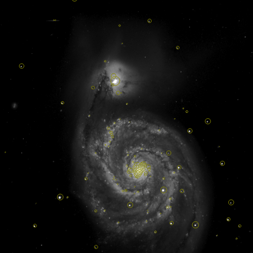

Frequently, we wish to overlay the images with a number of symbols (say all the galaxies in the region) or image outlines (like the coverage map for a mission dataset). The "-catalog" and "-imginfo" directives let us use a table as input to do this.
The basic commands draw with the current default symbol and color but there are additional optional directives that instruct mViewer to use a table column to scale the symbol size, read color and/or shape from other columns, and to place custom labels at each location instead of (or in addition to) the symbol. You can start simple and add these additional directives as needs require.
Refer back to the previous section for descriptions of the "-symbol" and "-color" directives. These set the "current" default symbol size, shape and color (and label color).
The same table might contain image metadata and symbols (or more frequently labels) to be draw, so subsequent -imginfo and -catalog directives might point to the same file but use different columns.
Catalogs But let's start with basics. Having set the symbol size, shape and color, we can use -catalog data.tbl to draw that symbol at each location in the table. The code looks for columns "ra" and "dec" (and failing that "lon" and "lat"). If the -csys directive has been given, it applies the appropriate transform and draws the symbol.
Frequently, the table contains flux, magnitude, or actual size information that can be used to scale the symbols. Adding the -scalecol directive before invoking the catalog drawing tells the software where to get this scaling data and how to apply it (scale linearly or with a log or take the column as a magnitude and scale by logs inversely).
Less frequently, we want to specify the color of the symbol record by record, have different shapes for different record subsets, or set the size explicitly (instead of through the scaling calculation above). For these, mViewer allows you to set -colorcol, -shapecol and -sizecol directives.
Finally, instead of (or in addition to) the symbol, you may wish to place a custom label for each record. Using the -labelcol directive (and optionally setting -symbol none) provides for this.
Some of these are illustrated below.
Image Metadata The -imginfo images.tbl directive looks for four corners coordinates in the table (columns ra1, dec1, ... ra4, dec4) or failing that WCS keyword columns from which it can calculate the four corners locations. Using the current color, it draws these outlines on the image.
Like the catalog data above, you can have per-record details, though in this case this is just the -colorcol directive.
|
Catalog Data
mViewer -color ffff00 \
-symbol 1.0 circle \
-scalecol j_m 16.0 mag \
-catalog fp_2mass.tbl \
-gray SDSS_g.fits 0s max gaussian-log \
-out catalog.png
Example data can be downloaded here. Tables of coordinates can be overlays as markers, optionally scaled by another table column. These tables must be in IPAC ASCII format and the coordinates of the sources in columns ra and dec (or lon and lat). The "-csys" directive informs any needed coordinate transformation. The "-symbol" gives us a base symbol for this catalog and if there isn't any scaling column information it is that symbol that will be used. However, the "-catalog" directive can include additional relative scaling information in the form of a scaling column, reference value (the value that will map to the default symbol size) and scaling type (linear, logarithmic, or magnitude). |
 |
|
Image Metadata
mViewer -color cyan \
-imginfo irsmap.tbl \
-gray SDSS_g.fits 0s max gaussian-log \
-out images.png
Image metadata tables (also IPAC ASCII) need to have enough information to define the boundaries of each image. The safest way to do this is to include columns for the four corners coordinates (named ra1, dec1, ... ra4, dec4). Failing this, mViewer will attempt to extract WCS information from columns named after the FITS WCS keywords (naxis1, crval2, crpix1, etc.). |